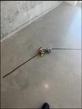
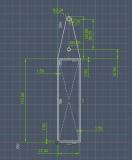
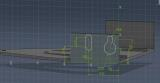

Project overview
Designed and built an autonomous line-following car using Arduino, embedded electronics, and CAD modeling. The project combined a mechanically structured chassis with a complete motor-and-sensor circuit so the vehicle could navigate from photoresistor feedback.




Mechanical design
Contributed to the chassis and structural component design using Fusion 360 and SolidWorks. The CAD work established the car’s physical layout and supported placement of the motors, wheels, electronics, and front sensor assembly.
Electronics and integration
Assisted with full circuit assembly, integrating the motors, photoresistors, LEDs, potentiometers, batteries, and motor drivers. Led soldering and hardware integration to keep the circuit organized and create reliable electrical connections across the prototype.
Embedded control
Programmed the Arduino to control autonomous navigation from photoresistor sensor feedback and the LED guidance system. The control logic translated changes in the detected line position into motor commands that steered the vehicle.
Project contribution
The work connected mechanical, electrical, and software decisions in one functioning build. Luis’s role spanned CAD design support, circuit assembly, embedded programming, soldering, and final hardware integration.
- MechanicalChassis and structural design
- ElectricalCircuit assembly and soldering
- EmbeddedArduino sensor-feedback control